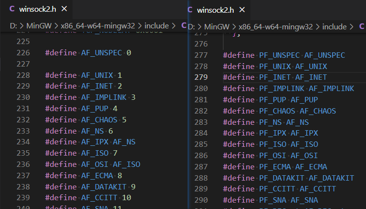

在创建套接字的时候，我们调用了 socket
函数，函数签名如下：
1 |
|
- af: 套接字使用的地址族（Address Family）或者协议族（Protocol Family）
- type: 套接字传输类型
- protocol：最终使用的协议
协议族（Protocol Family）
以下是协议族的部分分类：
| 名称 | 协议族 |
|---|---|
| PF_INET | IPv4互联网协议族 |
| PF_INET6 | IPv6互联网协议族 |
| PF_LOCAL | 本地通信的UNIX协议族 |
| PF_PACKET | 底层套接字的协议族 |
| PF_IPX | IPX Novell协议族 |
只需关心 PF_INET 即可，例子中会用到它
套接字类型
这个参数指定了数据传输方式，这里介绍两种最具代表性的：SOCK_STREAM 和 SOCK_DGRAM
1.SOCK_STREAM
SOCK_STREAM 又称为面向连接的套接字。它有以下特性：
- 基于连接：传输端和接收端必须一一对应（端对端传输），且需要先建立连接
- 数据可靠：保证数据不丢失且按序到达
- 数据边界：无消息边界，数据以字节流的形式传输
- 对应协议：TCP
2.SOCK_DGRAM
SOCK_DGRAM 又称为面向消息的套接字。它有以下特性：
- 基于消息：不需要建立连接，直接发送
- 数据不可靠：可能丢包、重复、乱序
- 数据边界：有消息边界，一次发送的数据是一整个报文
- 对应协议：UDP
最终协议的选择
其实通过接口签名的前两个参数进行组合，大多数情况下程序就已经可以得到最终的协议了，比如，PF_INET + SOCK_STREAM 可以确定用户要使用 TCP 协议，所以这种情况下第三个参数传 0 也可以。
但是存在前两个参数组合也无法确认最终协议的情况：在同一个协议族中，存在多个使用相同传输方式的协议。
所以这里设计了第三个参数，用来指定这个最终的协议，所以使用 TCP 的 Socket 也可以这么写：
1 | hSocket = socket(PF_INET, SOCK_STREAM, IPPROTO_TCP); |
AF 和 PF ?
在上述的 socket 函数签名中，第一个参数是 af ，但是我们实际调用的时候，传入的是 PF_INET：
1 | // 函数签名 |
要解释这个传参的问题，要先从 AF 和 PF 本身讲起。
- AF (Address Family) 指地址族，强调地址类型，比如 IPv4 在 AF 中指的是地址类型为 IPv4
- PF (Protocol Family) 指协议族，IPv4 在 PF 中强调的是协议类型为 IPv4
从语义来说，这个函数的签名要求传入的是地址类型，但是我们之所以可以传入 PF_INET 的原因是：在 Winsock 和大多数系统中，AF_XXX 和 PF_XXX 是同一个值！如下图的定义：

这本质上是历史语义的问题，在实际的使用中，无论是 AF 还是 PF 都不会出现问题。